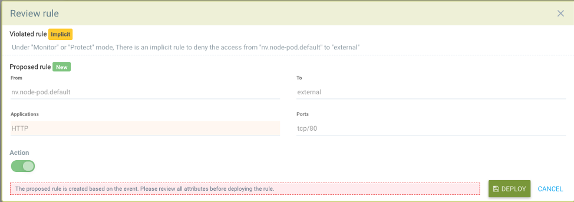

報告と通知
レポーティング
レポートはSUSE® Securityコンソールのいくつかのメニューから表示およびダウンロードできます。ダッシュボードは、PDFとしてダウンロードできるセキュリティ概要を表示します。PDFのダウンロードは、必要に応じてネームスペースでフィルタリングできます。

脆弱性スキャンおよびCISベンチマークの結果は、資産メニューセクションのそれぞれのメニューからCSVファイルとしてダウンロードできます。
セキュリティリスクメニューは、脆弱性およびコンプライアンスチェックのための高度な相関、フィルタリング、および報告を提供します。フィルタリングされたビューは、CSVまたはPDF形式でエクスポートできます。

PCI、HIPAA、GDPRおよびその他の規制に関するコンプライアンスレポートは、セキュリティリスク→コンプライアンスの高度なフィルターポップアップで規制を選択することにより、フィルタリング、表示、およびエクスポートできます。

イベント報告
セキュリティ、管理、入場、スキャン、およびリスクなどのすべてのイベントはSUSE® Securityによって記録され、通知メニューのコンソールでも表示できます。詳細については、以下を参照してください。
イベント制限
すべてのイベントは、ダッシュボードおよび通知画面に表示するためにメモリに保存されます。イベントはSYSLOG、Webhook、またはその他の手段を介して送信され、SIEMシステムによって保存および管理されることが期待されています。現在、以下の各イベントタイプには4Kの制限があります：
-
リスクレポート（スキャン、通知→リスクレポートにあります）
-
一般イベント（管理、通知→イベントにあります）
-
違反（ネットワーク違反、通知→セキュリティイベントにあります）
-
脅威（ネットワーク攻撃および接続問題、通知→セキュリティイベントにあります）
-
インシデント（プロセスおよびファイル違反、通知→セキュリティイベントにあります）
これが、制限に達した場合、最新の4Kイベントのみが表示される理由です。これは、通知リストおよびダッシュボードの表示に影響します。
SIEMおよびSYSLOG
SUSE® Securityコンソールの設定→構成メニューで、SYSLOGサーバーとWebhook通知を設定できます。ログレベル、TCPまたはUDP、およびJSON形式が必要な場合はその形式を選択してください。CVEデータは、各CVEごとに個別に送信することも、階層化スキャン結果を含めることもできます。イベントをSYSLOGの代わりに、または追加としてコントローラーのポッドログに送信することもできます。イベントはリードコントローラーのポッドログにのみ送信されることに注意してください。
その後、お気に入りのレポートツールを使用してSUSE® Securityイベントを監視できます。
さらに、CLIを通じてSYSLOGサーバーを次のように設定できます：
> set system syslog_server <ip>[:port]REST APIも設定に使用できます。
サンプルSYSLOG出力
ネットワーク違反
2020-01-24T21:39:34Z neuvector-controller-pod-575f94dccf-rccmt /usr/local/bin/controller 12 neuvector - notification=violation,level=Warning,reported_timestamp=1579901965,reported_at=2020-01-24T21:39:25Z,cluster_name=cluster.local,client_id=edf1c28d3411a9686e6e0374a9325b6a3626619938d3cf435a9d90075a1ef653,client_name=k8s_POD_node-pod-7c57bdbf5d-dxkn4_default_cdd9cf23-488d-439c-9408-ed98f838c67b_0,client_domain=default,client_image=k8s.gcr.io/pause:3.1,client_service=node-pod.default,server_id=external,server_name=external,server_port=80,ip_proto=6,applications=[HTTP],servers=[],sessions=1,policy_action=violate,policy_id=0,client_ip=192.168.35.69,server_ip=172.217.5.110プロセス違反
2020-01-24T21:39:29Z neuvector-controller-pod-575f94dccf-rccmt /usr/local/bin/controller 12 neuvector - notification=incident,name=Process.Profile.Violation,level=Warning,reported_timestamp=1579901965,reported_at=2020-01-24T21:39:25Z,cluster_name=cluster.local,host_id=k43:HF45:AJC6:5RYO:O5OA:KACD:KRT2:M3O6:P3VQ:IC4I:FSRD:P3HJ:ETLS,host_name=k43,enforcer_id=90822bad25eea14180c0942bf30197528bdab8c8237f307cc3059e6bbdb91f7a,enforcer_name=k8s_neuvector-enforcer-pod_neuvector-enforcer-pod-cg8jp_neuvector_d4ef187e-041c-4bc2-9cdc-c563a3feac6c_0,workload_id=d1be6d14f1f2782029d0944040ea8c0ba581991de99df86041205e15abc80209,workload_name=k8s_node-pod_node-pod-7c57bdbf5d-dxkn4_default_cdd9cf23-488d-439c-9408-ed98f838c67b_0,workload_domain=default,workload_image=nvbeta/node:latest,workload_service=node-pod.default,proc_name=curl,proc_path=/usr/bin/curl,proc_cmd=curl google.com,proc_effective_uid=1000,proc_effective_user=neuvector,client_ip=,server_ip=,client_port=0,server_port=0,server_conn_port=0,ether_type=0,ip_proto=0,conn_ingress=false,proc_parent_name=docker-runc,proc_parent_path=/usr/bin/docker-runc,action=violate,group=nv.node-pod.default,aggregation_from=1579901965,count=1,message=Process profile violation入場制御
2020-01-24T21:48:31Z neuvector-controller-pod-575f94dccf-rccmt /usr/local/bin/controller 12 neuvector - notification=audit,name=Admission.Control.Violation,level=Warning,reported_timestamp=1579902506,reported_at=2020-01-24T21:48:26Z,cluster_name=cluster.local,host_id=,host_name=,enforcer_id=,enforcer_name=,workload_domain=default,workload_image=nvbeta/swarm_nginx,base_os=,high_vul_cnt=0,medium_vul_cnt=0,cvedb_version=,message=Creation of Kubernetes ReplicaSet resource (nginx-pod-695cd4b87b) violates Admission Control deny rule id 1000 but is allowed in monitor mode [Notice: the requested image(s) are not scanned: nvbeta/swarm_nginx],user=kubernetes-admin,error=,aggregation_from=1579902506,count=1,platform=,platform_version=SYSLOG出力をキャプチャするには：
nc -l -p 8514 -o syslog-dump.hex | tee syslog-messages.txt画面上のメッセージをキャプチャし、ファイルにログを記録し、16進ダンプをログに記録します。
通知とログ
通知メニューのSUSE® Securityコンソールでは、セキュリティイベント、リスク（スキャンおよびコンプライアンス）イベント、一般的なシステムイベントの通知を見つけることができます。
通知は、通知メニューからCSVまたはPDFとしてダウンロードできます。さらに、ネットワーク攻撃のためのパケットキャプチャをダウンロードでき、各スキャン結果の通知→リスクレポートメニューから脆弱性結果をダウンロードできます。
CLIまたはREST APIを使用してログを表示することもできます。
セキュリティイベント
違反は、ホワイトリストルールに違反する接続またはブラックリストルールに一致する接続です。ネットワーク違反はキャプチャされ、ソースIPをさらに調査できます。ホワイトリストネットワーク違反イベントは、「暗黙の拒否ルールが違反されました」として表示され、ネットワーク接続がホワイトリストルールに一致しなかったことを示します。

このビューでは、ネットワーク、プロセス、ファイルイベントを確認でき、誤検知に対してホワイトリストルールを簡単に追加するために、レビュー規則ボタンをクリックできます。高度なフィルターを使用すると、表示するイベントの種類を選択できます。

SUSE® Securityは、DNS、DDoS、HTTPスモグリング、トンネリングなどの既知の攻撃に対してすべてのコンテナを継続的に監視します。攻撃が検出されると、ここにログが記録され、ブロックされ（コンテナ/サービスが保護するように設定されている場合）、パケットが自動的にキャプチャされます。パケットの詳細を表示できます。例えば：

セキュリティイベントの新しいルールを追加
レビュー規則ボタンを選択して新しいルールをデプロイすることで、検出されたイベントを許可または拒否するルール（セキュリティポリシー）を簡単に追加できます。

これは、誤検知が発生した場合や、ネットワーク/プロセスの動作が発見されるべきだったが、発生しなかった場合に役立ちます。
詳細フィルタ
各一般的なタイプを選択するか、キーワードを入力してイベントを表示またはエクスポートするための高度なフィルターを作成します。
-
［Network (ネットワーク)］。違反（暗黙の拒否ルール）、脅威などのネットワークイベント。
-
プロセス。NMAP、SSHなどのプロセスホワイトリスト違反または疑わしいプロセスが検出されました。
-
パッケージ。コンテナ内でパッケージが更新またはインストールされたため、これによりセキュリティイベントが生成されました。
-
トンネル。トンネル違反が検出されました。データを盗むために、通常はDNSトンネリングが使用されます。この検出は、トンネルプロセスが開始され、DNSプロトコルを使用したネットワーク活動と相関させることによって行われます。以下のサンプルイベントを参照してください。 ヨウ素トンネルの説明 https://github.com/yarrick/iodine
-
ファイル。ファイルアクセス違反。監視対象の機密ファイル/ディレクトリにアクセスされたか（デフォルトの監視リストを参照）、カスタムファイルモニタールールがトリガーされました。詳細については、ファイルアクセスルールページを参照してください。
-
特権。コンテナまたはホストで特権の昇格が検出されました。特権の昇格は多くの方法で行うことができ、100%検出可能ではないため、これはテストが難しい条件です。
その他の統合
SUSE® Securityは、SUSE® SecurityのGitHubアカウント https://github.com/neuvector/prometheus-exporterにGrafanaダッシュボードを持つPrometheusエクスポーターを公開しており、各インストールに合わせてカスタマイズ可能です。 さらに、Fluentdとのサンプル統合もリクエストに応じて利用可能です。
Webhookアラートは、設定→構成内でウェブフックエンドポイントを設定することにより送信できます。次に、ポリシー→のレスポンスルールのメニューで適切なレスポンスルールを作成し、イベントの種類とアクションとしてウェブフックを選択します。